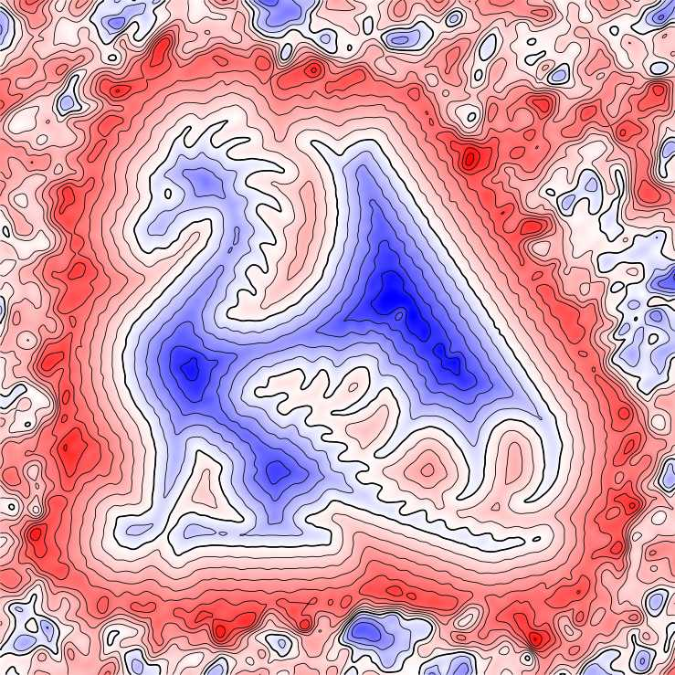
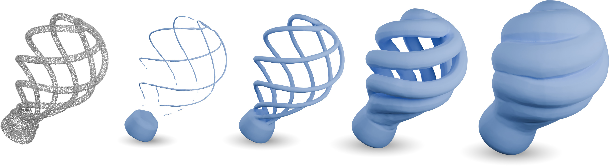

ImplicitLab
The implicit lab is a python library for the computation of implicit neural representations (INR) of geometrical objects. It is built on top of pytorch and provides utilities for geometric dataset handling and sampling, neural architecture definitions, training, geometrical request and visualization.
Implicit neural representations are a recent technique for encoding a signal in the parameters of a neural network. This library focuses of neural representations of surfaces, which are defined as the zero level set of some continuous function over space, like the signed distance function.

Signed distance field of a 2D dragon model [Sitzmann et al., 2020]
Level sets of a 3D lamp model computed from an oriented point cloud [Coiffier & Béthune, 2024]Features
The library currently features:
- Loading, processing and sampling of various input geometry types (point clouds, polylines, surface meshes) to generate relevant training datasets
- Training of various neural models according to published algorithms
- Geometrical queries on INRs
Installation
To install implicitlab, simply type:
Dependencies
Implicitlab currently depends on the following libraries:
- pytorch
- deel-torchlip
- meshio
- mouette
- libigl
- numpy
- scipy
- scikit-image
- matplotlib
Bibliography
Here is a list of relevant articles partially or completely implemented in the library:
- Sorting out Lipschitz function approximation. Cem Anil, James Lucas, and Roger Grosse. June 2019. arXiv:1811.05381, doi:10.48550/arXiv.1811.05381.
- A Unified Algebraic Perspective on Lipschitz Neural Networks. Alexandre Araujo, Aaron Havens, Blaise Delattre, Alexandre Allauzen, and Bin Hu. October 2023. arXiv:2303.03169.
- SALD: Sign Agnostic Learning with Derivatives. Matan Atzmon and Yaron Lipman. In International Conference on Learning Representations. October 2020. doi:10.48550/arXiv.2006.05400.
- SAL: Sign Agnostic Learning of Shapes From Raw Data. Matan Atzmon and Yaron Lipman. In 2020 IEEE/CVF Conference on Computer Vision and Pattern Recognition \(CVPR\), 2562–2571. Seattle, WA, USA, June 2020. IEEE. doi:10.1109/CVPR42600.2020.00264.
- 1-Lipschitz Neural Distance Fields. Guillaume Coiffier and Louis Béthune. Computer Graphics Forum, 43\(5\):e15128, 2024. doi:10.1111/cgf.15128.
- Implicit Geometric Regularization for Learning Shapes. Amos Gropp, Lior Yariv, Niv Haim, Matan Atzmon, and Yaron Lipman. July 2020. arXiv:2002.10099.
- Adaptive Gradient Methods with Dynamic Bound of Learning Rate. Liangchen Luo, Yuanhao Xiong, Yan Liu, and Xu Sun. February 2019. arXiv:1902.09843, doi:10.48550/arXiv.1902.09843.
- Optimizing Rank for High-Fidelity Implicit Neural Representations. Julian McGinnis, Florian A. Hölzl, Suprosanna Shit, Florentin Bieder, Paul Friedrich, Mark Mühlau, Björn Menze, Daniel Rueckert, and Benedikt Wiestler. December 2025. arXiv:2512.14366, doi:10.48550/arXiv.2512.14366.
- Instant neural graphics primitives with a multiresolution hash encoding. Thomas Müller, Alex Evans, Christoph Schied, and Alexander Keller. ACM Transactions on Graphics, 41\(4\):1–15, July 2022. doi:10.1145/3528223.3530127.
- DeepSDF: Learning Continuous Signed Distance Functions for Shape Representation. Jeong Joon Park, Peter Florence, Julian Straub, Richard Newcombe, and Steven Lovegrove. January 2019. arXiv:1901.05103, doi:10.48550/arXiv.1901.05103.
- Implicit Neural Representations with Periodic Activation Functions. Vincent Sitzmann, Julien Martel, Alexander Bergman, David Lindell, and Gordon Wetzstein. In Advances in Neural Information Processing Systems, volume 33, 7462–7473. Curran Associates, Inc., 2020. doi:10.48550/arXiv.2006.09661.
- Fourier Features Let Networks Learn High Frequency Functions in Low Dimensional Domains. Matthew Tancik, Pratul Srinivasan, Ben Mildenhall, Sara Fridovich-Keil, Nithin Raghavan, Utkarsh Singhal, Ravi Ramamoorthi, Jonathan Barron, and Ren Ng. In Advances in Neural Information Processing Systems, volume 33, 7537–7547. Curran Associates, Inc., 2020. doi:10.48550/arXiv.2006.10739.
- HotSpot: Signed Distance Function Optimization with an Asymptotically Sufficient Condition. Zimo Wang, Cheng Wang, Taiki Yoshino, Sirui Tao, Ziyang Fu, and Tzu-Mao Li. In Proceedings of the IEEE/CVF Conference on Computer Vision and Pattern Recognition, 1276–1286. 2025. doi:10.48550/arXiv.2411.14628.
- Neural-Singular-Hessian: Implicit Neural Representation of Unoriented Point Clouds by Enforcing Singular Hessian. Zixiong Wang, Yunxiao Zhang, Rui Xu, Fan Zhang, Pengshuai Wang, Shuangmin Chen, Shiqing Xin, Wenping Wang, and Changhe Tu. September 2023. arXiv:2309.01793, doi:10.48550/arXiv.2309.01793.
- Muon: An optimizer for hidden layers in neural networks. Keller Jordan. URL: https://kellerjordan.github.io/posts/muon/.